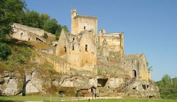
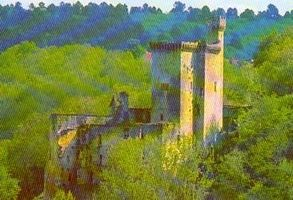
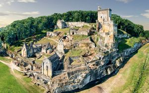
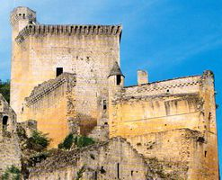
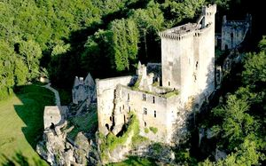
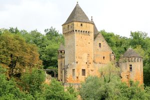
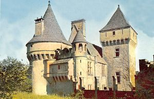
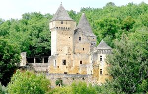
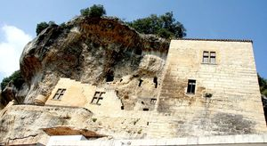

Recensement Jean-Claude Truffet
| Département | 24 — Dordogne |
| Canton | Saint-Cyprien |
| Commune | Les Eyzies-de-Tayac-Sireuil |
| Type d'édifice | Forteresse |
| Période d'origine | XII-XV |
| Coordonnées GPS | 44° 56' 30" Nord et 1° 6' 6" Est. Laussels Grav de 6 à 8 GPS : 44° 56' 41" Nord, 1° 08' 05" Est. Eyzies de Tayac grav 9. |









COMMARQUE, les maisons-tours sont tenues par des lignages de petite noblesse dont on connaît quelques noms , construit au XIIe siècle par les sires de Commarque, puis les Cendrieux, les Gondrix, les La Chapelle. Cédé en gages aux Templiers pour pouvoir se croiser ceux-ci ne consentirent pas à la restitution et le domaine passa aux chevaliers de Saint-Jean en 1314 puis aux sires de Beynac. Pendant la guerre de cent ans, les Beynac restent les défenseurs fidèles de la couronne de France. Les anglais s'emparent néanmoins du château en 1406 et le conservent pendant quelques années. Le déclin de la famille des Beynac, date de cette époque. Dans les années 1500, il semble que le castrum de Commarque soit déjà déserté par les anciennes familles résidentes. Plus tard, en 1569, le castrum est à nouveau pris pendant les guerres de religion par les catholiques. C'est sans doute à cette époque que s'est effondrée la salle voûtée. Guy de Beynac, dernier châtelain de Commarque, y meurt en 1656. Le site est abandonné définitivement au XVIIIe siècle. Un siècle plus tard, le château est en ruine. Resté longtemps la propriété de la famille la Tour du Roc, puis du prince de Croÿ et en 1968, Hubert de Commarque achète les ruines du château. LAUSSEL, typique château périgourdin, ancienne résidence des Commarque, de style Renaissance, est très restauré. Au cours du XVe siècle la famille seigneuriale installée dans le château médiéval de Commarque délaisse peu à peu sa forteresse au profit du château de Laussel, situé en face. Les archives permettent de connaître le nom du premier maître duvre de l'édifice, Blaise Bernat de Sarlat, le nom dun maçon, Jean Vachier de Marquay, et le nom dun tireur de pierre, Guillaume Bru de Tamniès. Signalé en ruine dès 1738, lédifice estentièrement restauré au début du XXe siècle par larchitecte Henri Deglane.
COMMARQUE, au XIIe siècle il existe une agglomération, un donjon avec un logis, une chapelle et des maisons-tours : c'est le castrum de Commarque. Plusieurs autres tours furent construites, accompagnées à chaque fois d'un logis après que la famille de Beynac se soit rendue maîtresse du château, la tour en bois est remplacée par un donjon en pierre plusieurs fois rehaussé, en particulier en 1380, et couronné de mâchicoulis éclairés par de grandes baies à colonnettes. Ainsi, les seigneurs du lieu, les Beynac, logeaient dans le donjon seigneurial.il est composé de deux parties une tour quadrangulaire de 7,50 mètres et d'une construction pantagonale du XIIIe siècle. iques est en cours pour plusieurs années. LAUSSEL date du XVe et XVIe siècle. L'ancien château peu commode, fut en partie détruit. Le château actuel se dresse juste en face de la forteresse de Commarque. Il est de style Renaissance. Très bien restauré, possède un pigeonnier troglodytique. Il a été bâti par les seigneurs de Commarque au XVe siècle pour servir de résidence. Sur une falaise surplombant la vallée de la Beune Ainsi lhistoire de Laussel se confond avec celle du château de Commarque. Les deux édifices sont dailleurs tous deux laissés à labandon en même temps, au XVIIIe siècle. Laussel date des XVe et XVIe siècles, des tours à mâchicoulis, un donjon carré, une chapelle du XVIIe siècle et un chemin de ronde posé sur des corbeaux de pierre à six redans, en font un ensemble, qu'une habile restauration entreprise, conforte. Château de Tayac et ses dépendances, XIIe siècle XIVe siècle XVe siècle, classé
Famille de Commarques
"
A Les Eyzies-de-Tayac-Sireuil Commarques grav de 1 à 5 GPS : 44° 56' 30" Nord et 1° 6' 6" Est. Laussels Grav de 6 à 8 GPS : 44° 56' 41" Nord, 1° 08' 05" Est. Eyzies de Tayac grav 9.